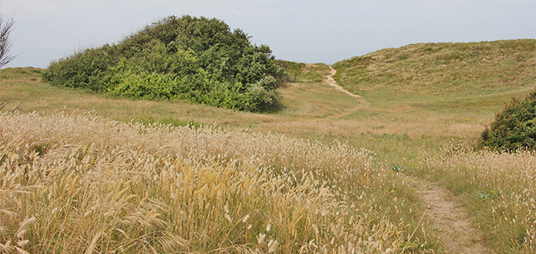
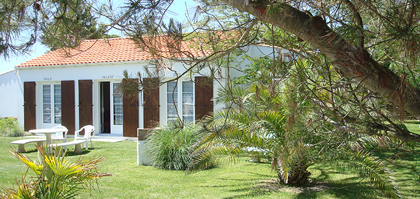
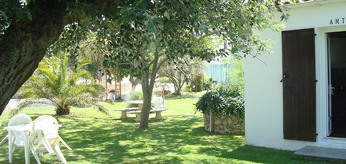
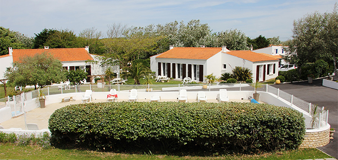
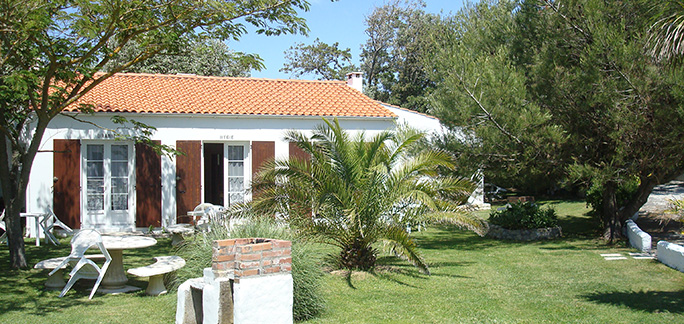
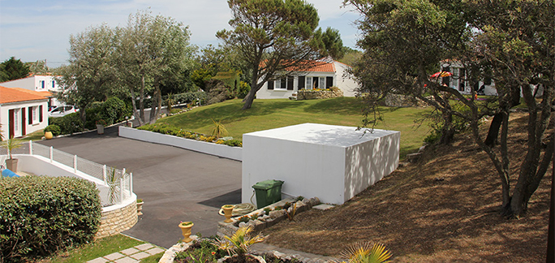

- 
- 
- 
- 
- 
- 
Nos coups de coeur et vos découvertes
L’île et son histoire
Oléron, la plus vaste des îles métropolitaines françaises après la Corse (35 km de longueur, 12 km dans sa plus grande largeur, 34 mètres à son point culminant (à la dune de Saint Trojan), 90 km de côtes, une superficie de 175 km2, 19 000 habitants permanents), est demeurée des origines à la Seconde Guerre mondiale un site stratégique très convoité, qui se trouve inclus tant dans le système de défense des côtes de Vauban, que dans le mur de l'Atlantique.
Le Fort Boyard
Le vaisseau de pierre : situé à mi-chemin entre l'Ile-d'Aix et l'Ile-d'Oléron, Fort-Boyard a été conçu pour protéger la rade de l'Ile-d'Aix et l'Arsenal de Rochefort.
La Citadelle et son château
La Citadelle fut construite en 1630, un peu à l'est du château fort d'Alienor d'Aquitaine qui fut alors démoli.
Le Phare de Chassiron
Le phare de Chassiron, juché sur une falaise rocheuse, est situé à l'extrémité nord de l'île d'Oléron, prés de la ville de Saint-Denis-d'Oléron. Le phare permet aux marins de rentrer dans les eaux du Pertuis d'Antioche, lieu semé de récifs et réputé pour ses nombreux naufrages.